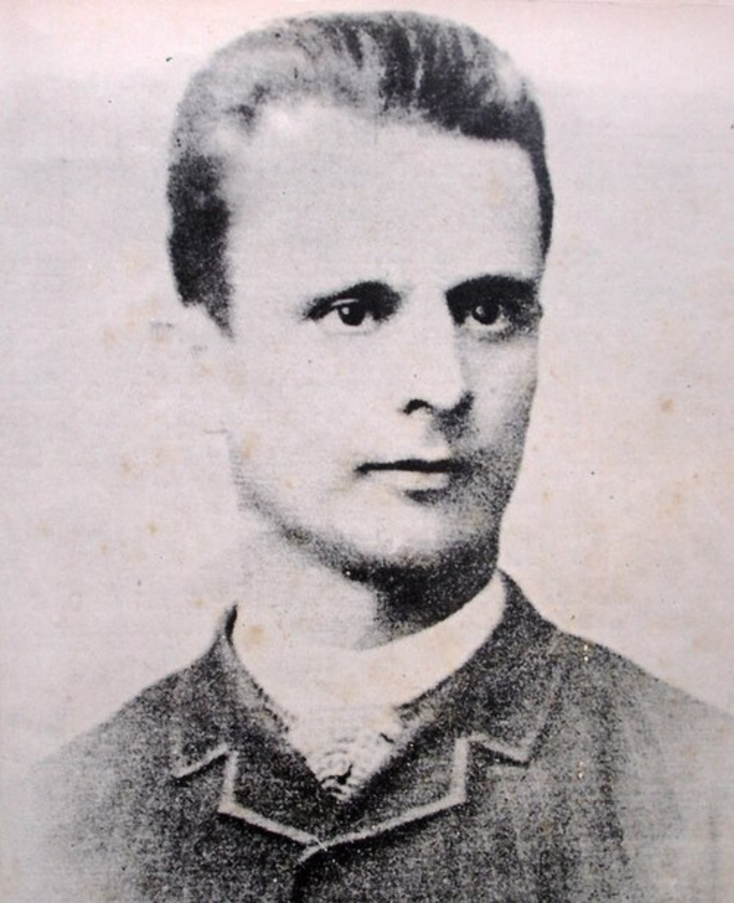
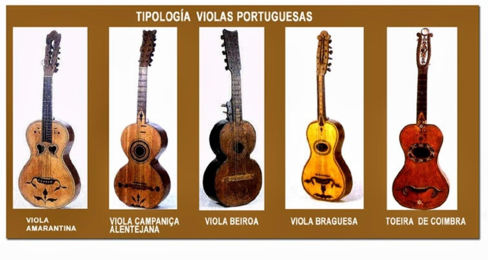
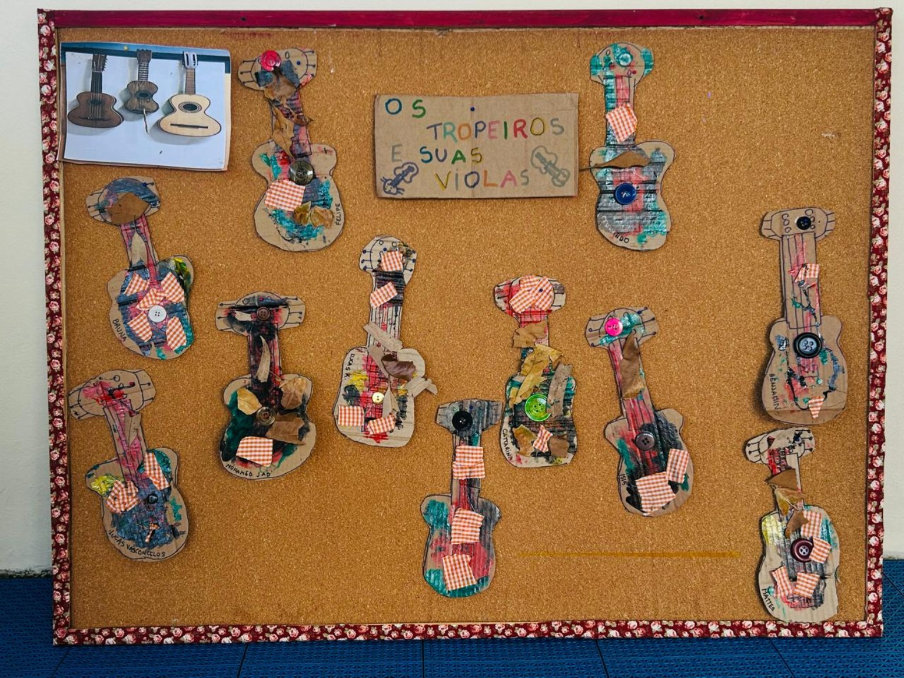
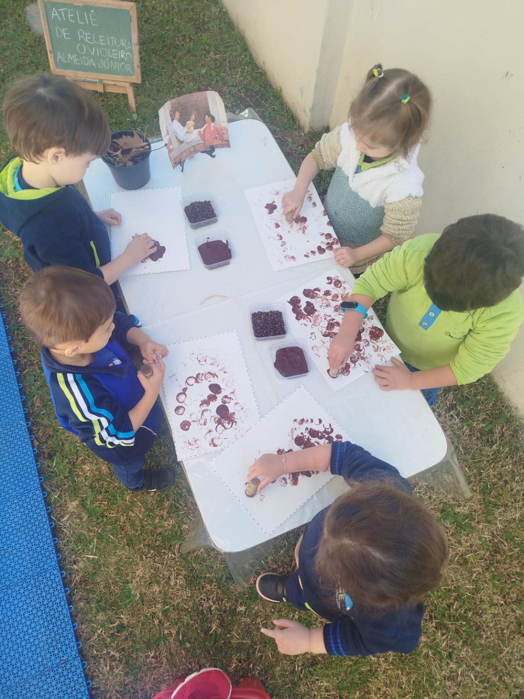
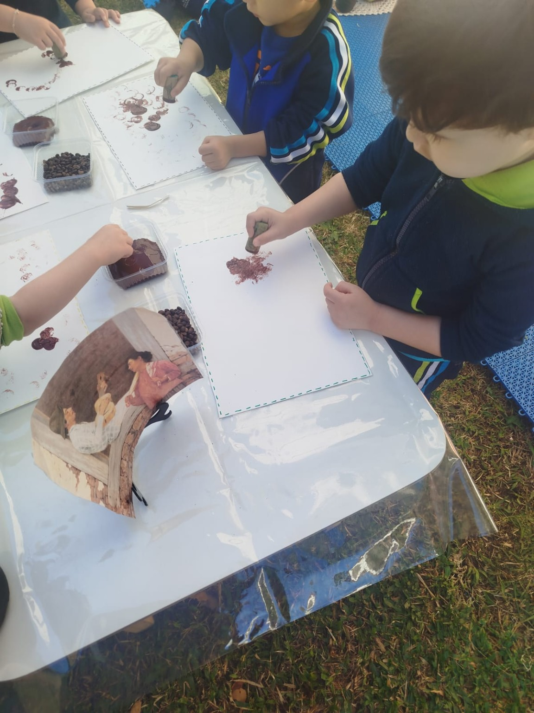
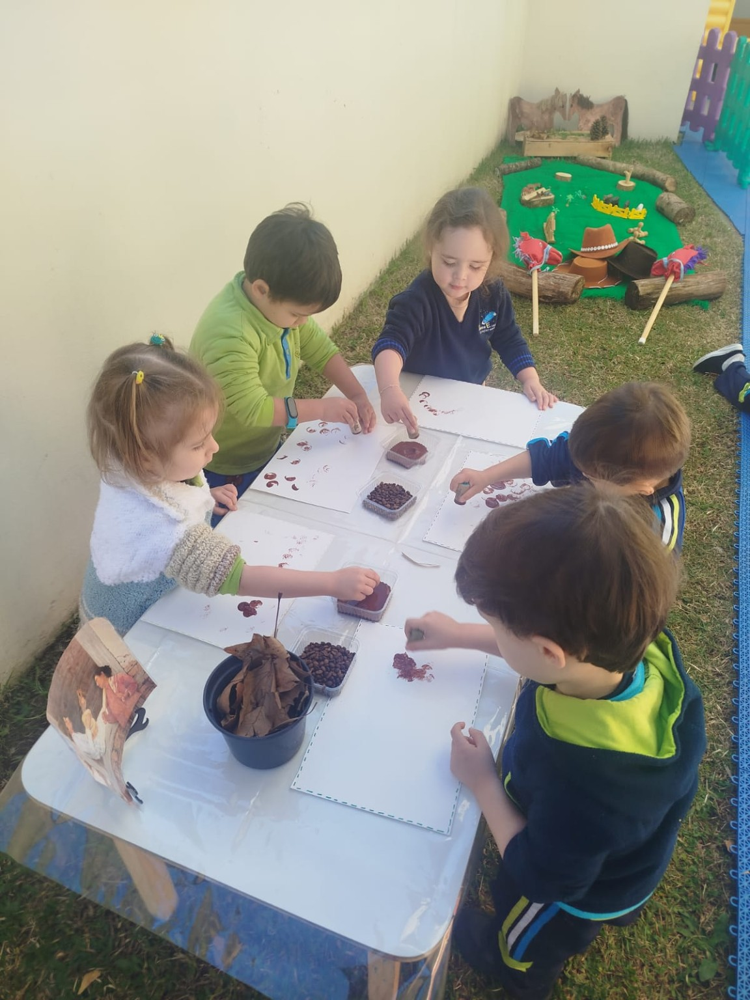

Preparando memórias...
Arte, Música e Tradições do Campo
Um projeto especial sobre a obra de Almeida Júnior, explorando cores, sons e a beleza da cultura caipira brasileira.
Explorar o Projeto ↓

José Ferraz de Almeida Júnior nasceu em Itu, São Paulo e tornou-se um dos mais importantes pintores do Brasil.
Retratava o cotidiano das pessoas do campo
Valorizou a cultura e os costumes brasileiros
Celebrou a vida simples e a tradição do interior

Identificaram as cores quentes e terrosas da pintura
Reconheceram formas geométricas no instrumento
Imaginaram como seriam as texturas da madeira e das cordas
Imaginaram os sons produzidos pela viola na pintura
Após observar a obra e conhecer a viola, as crianças criaram as suas!

Tipos de viola e seus detalhes

Nossas próprias violas com papelão e tecidos
Conhecemos diferentes tipos de viola e percebemos que elas possuem formatos, cores e tamanhos variados. A viola faz parte da cultura caipira e acompanha histórias, cantorias e tradições do interior.
Diferentes formatos, cores e detalhes que encantaram as crianças
Cada criança criou sua própria viola com papelão, tecidos e botões
"Após conhecer diferentes tipos de viola, as crianças confeccionaram
suas próprias violas utilizando papelão, tecidos, botões e outros
materiais. Cada produção foi única, valorizando a
criatividade e a expressão artística."
A viola faz um som,
Que alegra o coração.
No campo mora a amizade,
A música e a tradição.
Antes de criar, as crianças apreciaram e analisaram a pintura original de Almeida Júnior com atenção e curiosidade.
Tintas, materiais naturais e texturas diversas foram explorados livremente, desenvolvendo a sensibilidade artística.

Cada criança criou sua versão inspirada em "O Violeiro", expressando emoções, imaginação e criatividade únicas.
Observamos uma obra de arte brasileira
Exploramos cores, formas e texturas
Conhecemos a viola e a cultura caipira
Desenvolvemos a criatividade e a expressão artística
Valorizamos a cultura do campo e as tradições de Barretos
Agradecemos às famílias por acompanharem este projeto. Cada produção revela descobertas, criatividade e a alegria das crianças ao conhecer a arte e a cultura brasileira.
Vocês fazem parte dessa história. Obrigada por acreditarem na importância da arte na vida dos pequenos. 🎵